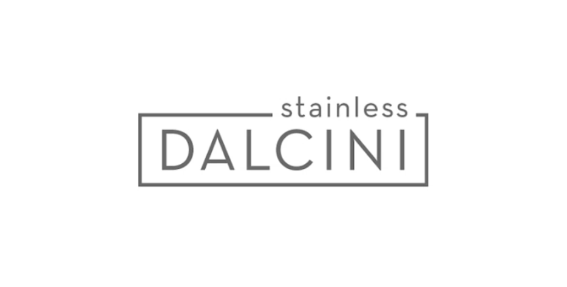

Design Intern
Dalcini Stainless Steel
Highlights
- Helped design product for products releasing on store shelfs.
- Designed interactive product questionnaires on company website.
- Worked to ameliorate companies search engine optimization (SEO).